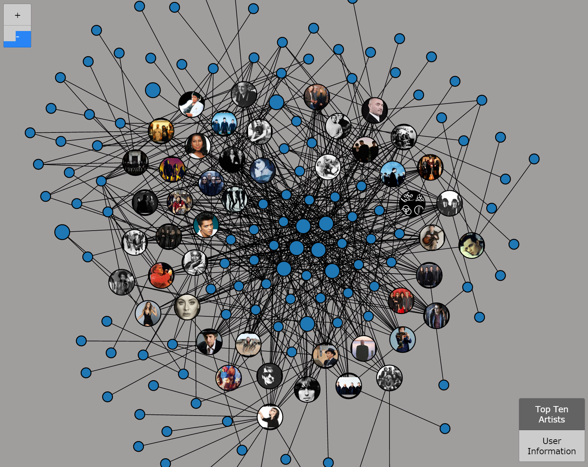
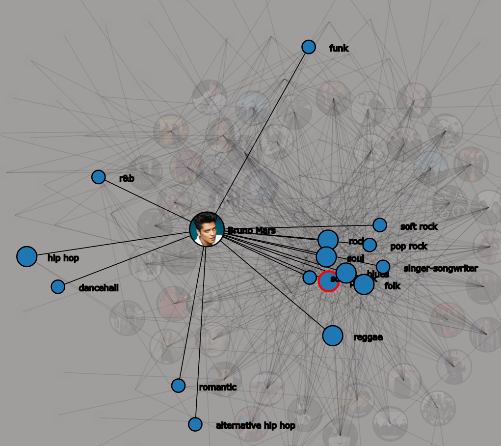
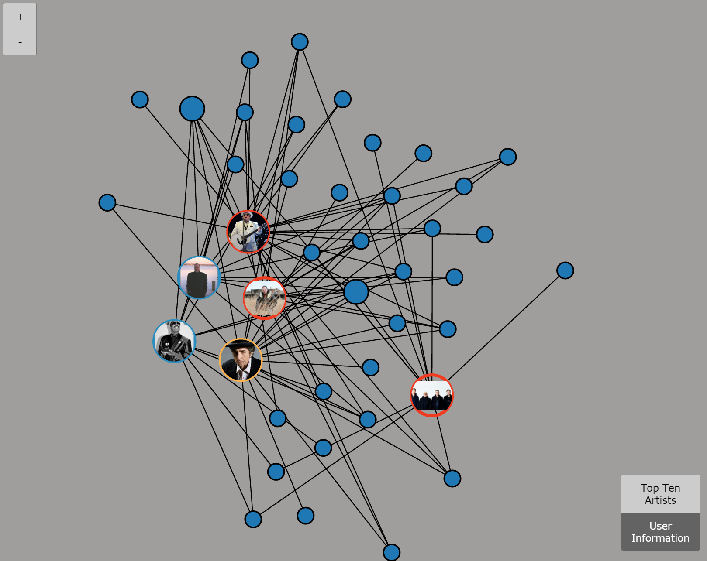

Basics
If you would like to download the source, please go here.
Tutorial
The following will provide a step-by-step guide to ensure proper usage and getting the most out of all features implemented.
Loading the App
To begin, select the 'Application' link on the navigation sidebar to load the app. Please be patient as the site requires about 30secs to 1min to fetch all the data and load the elements. The loading is finished when user panels on the left and right sides have loaded the artist information in the lists.
Also, please note that the app is designed for the big presentation screen, which has a resolution of approximately 8196 x 2100, used in our EVL classroom. Attempting to load the app on a regular desktop window will lead to an erroneous layout. However, to simulate the normal resolution, use the Device Mode in Chrome browser's Developer Tools.
Layout
Our alpha design choices is outlined on the Design page of our project site, which is still very consistent with our final design. The layout is based on the following:

[Final Design SS]()
Initial content on load
Once the app is fully loaded, we have various initial sets of data being shown in the panels. The shared map and shared force graph will show the data for the Top 10 Artists for all decades. The user artist selection panels will be initialized with a list of artists for all decades and the top ten genres per year in a Streamgraph. The user search panels will be empty but ready for use. The shared timeline as well as the user selected artists and genres will initially be empty as well.
Modes
There are two main modes to the app: Top 10 Lists and User Selections.
Top 10 Artists layers contains the initial data set with all the Top 10 artists for every decade displayed. After the initial load, this data will remain there and does not change.
To change the views for the Shared Map and Shared Force Graph, click the 'Top 10 Artists' button once to hide the layer. The button will change from green to white. Then click 'User Selections' button to turn on this layer. The button will go from white to green. While both layers can be turned on at the same time, this would considered in unintended usage as both sets of data are being shown and be confusing.
In short, Gray is ON and White is OFF.
User 1 and 2
The app has the possibility to handle two separate users, user1 (red) on left side and user2 (blue) on right side. Each user can use the app independantly of the other. Both user selections will be color coded and added to the Shared Timeline, the User Selections layers of Shared Map and Shared Force Graph, and the Shared User Artists and Genres row. These four shared panels of the app will be collectively referred to as 'shared views' for the remainder of the tutorial.
User Timeline
The User Timeline shows the music genre data per year and displays based on a popularity algorithm using values provided by the API and additional adjustments that are calculated by us. Each fill color is represents one genre. There are 10 genres displayed at any given year. As a result of this, a some colors may be persistent across all years, like Pop, while others briefly show up for a few years and disappear.

Hovering over a specific genre will bring it to focus while graying out all the other genres. This provides easy clarity to easily see how the genre popularity changes over the years.
On the User Timeline, the initial range of data will be 1960 to 2010. This range of years will be initially displayed on the shared map and shared force graph. At the bottom of the User Timeline, there are two slider dots to control the lower and upper bounds of the ranges. The user can click on the any handle and slide to the left or right to adjust the bounds. The resulting changes in the range will update the user list panels for artists and genres.
User Selection Lists (Explore)
Any duplicate artists that show as Top 10 for more than one year will not be duplicated in the user list panels. This range selection is independant of the other user and does not affect the shared views.
When a user selects by double clicking a specific artist or genre from their personal Top 10 Lists, then the artist or genre will be added to their respective User1/2 selections panels as well as the shared views.
My Artists and My Genres
After a user has chosen a specific artist or genre from the list, it will be added to My Artist/Genre lists. These panels will allow the user to clearly see what is added to their shared views and easily allow them to remove any artists or genres from their list by clicking the trash can next to their name. The trash can at the top of the list containers removes all items in their respective lists.
Shared Map
The map contains standard features including zoom and panning. Each artist's location, given by the API, is represented by on the map as a circle. The circle is colored according to the main genre of the artist, which matches that of the genre colors of the user timelines. If multiple artists are from the same location, additional circles will surround each other, like a bulleye. Clicking each circle will load a small popup into view that shows the artist album image, artist name, artist location, and artist main genre. Clicking the 'X' on the popup or clicking on the map elsewhere will close the popup.
See the Modes section above for instruction on how to toggle the layers. The
The reset zoom button simply brings the map back to its initial position and zoom. This is useful when zoomed in deeply and panned, and want to quickly reset the map.
Force Graph

The force graph contains two types of circles. The first is the artist circle, which contains the artist album image in the center and an outline edge to correspond to the user color. The second type corresponds to the genres which have the following encodings:
- Size: Smaller circles are not a main genre for any artist in the graph while bigger ones are at least the main genre for one artist in the graph.
- Color: If the genre appears in the Top Ten Genres per Year Graph, the circle will map the same color used in that graph. Otherwise, blue is used.
Finally, the black lines are the connections between the artists and the genres. Every artist is connected to at least one genre circle, however almost all artist have several connections since their music often has multiple genre classifications.
Selecting a particular artist circle will highlight the artist and all their genres. Selecting a particular genre circle will highlight that genre and all the artists that are connected to it. Any selection will display the artist and genres names.
Single Artist Selection:

User 1 and 2 Selections:

User 1 (left user) is Red, User 1 (right user) is Blue, and Common (both users) is Orange.
Shared Selected Artists and Genres
This section is the middle horizontal row. This contains all the user 1 and 2 selections chronologically added to the stream.
When either user selects an artist to add to the shared views, the square will contains the artist album image. The square border represents the user that added the element; either red for user 1, blue for user 2 or yellow is both users selected the element. Below the square the artist name.
When either user selects a genre, the square simply contains the name of the genre with the border color corresponding again to the user selection. The name of the genre is shown below the square.